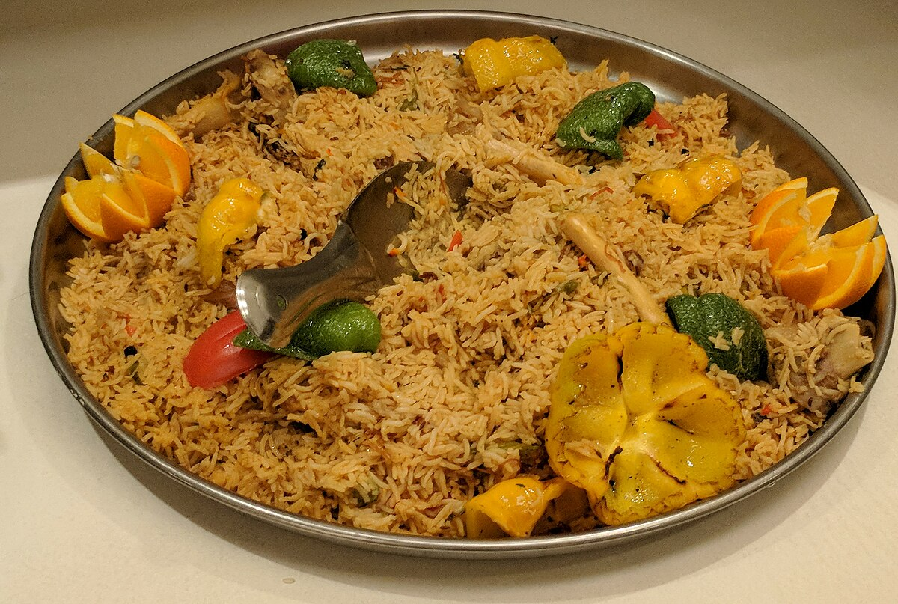

Home Page
Kabsa

Kabsa's Recipe and why would you choose to cook a Kabsa
Kabsa is a famous dish almost in every Khaliji country, due
to its a bit spicy flavour, and being rice. I mean, every Khaliji person
lovers rice, so yeah.
Even though it might seem like a really complicated dish to make,
it is quite simple! and the results are very impressing, just stick with us!
Ingredients:
- 2 cups of rice
- 2 tablespoons of tomatoe paste
- 1/4 cup of butter
- 1 big onion softly chopped
- 4 cups of hot water
- salt and black pepper
- 1/2 tablespoon of ground coriander
- 1/2 tablespoon of ground cumin
- 1.5KG of chicken, 8-10 pieces
- 2 pieces of clove
- 6 pieces of garlic cloves
- 1/4 cup of mashed tomatoe
- 400 grams of fresh chopped tomatoe
Steps:
- melt the butter in a big cooking pot.
- Add the chicken, the garlic, and the onion and stir until
the onion cooks and the chicken takes a brown color.
- Add the mashed tomatoe, and let it cook on
low fire for a few minutes.
- Add the tomatoe paste, the cloves,
and the salt and black pepper.
- Cook the mix for a few minutes.
- Add the water and let the mix boil,
and then lower the heat and cover the pot.
- Cook the mix for 30 minutes.
- Add the rice into the pot and stir well.
- Cover the pot again.
- Let the mix cook on low heat for 35 - 40 minutes.
- Cook the mix well until the rice is cooked.
- Put the rice on a large serving dish, and there you go!